1产品概述
Live Report 是一个面向业务人员的 AI 报表工具：输入一张干净的二维表，产出一份数据真实、口径可查、可以在浏览器里继续编辑的互动报告。它把「让 AI 写报告」这件事里不可靠的部分（排版、图表配置、SQL、数据加工）全部交给确定性脚本，只把「看懂数据、做分析选择」留给模型——因此同一份数据每次构建得到的报告是一致的，图表上看到的每个数字都可以追溯到源数据。
- 数据为真：报告里没有任何手抄数字。KPI、图表、表格都由聚合引擎实时计算；筛选、下钻、改图表配置之后所有卡片同步重算。
- 编辑即所得：读者可以进入编辑模式，拖拽字段换维度、换图表类型、改 TOP-N、开合计——全部即时生效，不用回到构建工具。
- 一份报告多种用途：日常在浏览器里看、月度例会切到汇报模式放映、临时导出 PPTX / PDF 分发，布局互不干扰。
1.1工作原理
其中「智能构建」阶段会自动完成：数据画像（类型 / 基数 / 缺失率 / 数值统计）、列角色与数值语义推断、图表选型与布局求解、KPI 与筛选器生成，最后经过真实浏览器审计（每张图必须真实绘制、控件必须可用）才算构建成功。
1.2三种交付形态
构建时按数据规模自动选择（auto），也可以显式指定。三种形态的报告功能完全一致，差别只在数据放在哪里。
| 形态 | 数据位置 · 适合场景 · 打开方式 |
|---|---|
| 单文件singlefile | 全量数据内嵌在 HTML 文件里。适合小数据量（≤ 10 万行）、离线分发、邮件附件； 双击 <报告标题>.html 即可打开，无需任何服务。 |
| 数据服务server | 数据在本机 SQLite 数据服务中，浏览器按需取聚合结果。适合大数据量（≤ 500 万行）、在线编辑 / 局域网分享 / 持续更新数据； 双击 打开报告.command（macOS）/ 打开报告.cmd（Windows）启动器，或访问报告 URL。 |
| 混合mixed | 小表内嵌、大表上服务，按表自动分流。适合多数据源报告中只有部分大表； 打开方式同 server。 |
server / mixed 模式下，报告文件夹里的 <报告标题>.html 是一张指引入口页（载有访问地址、编辑口令、管理页链接），不是报告本体，请勿把它当报告文件单独发送——收到的人打开会看到图表「加载不出来」。正确的交付物是报告 URL + 启动器 + 管理页地址。
1.3数据量上限
| 形态 | 行数上限 | 其他约束 |
|---|---|---|
| 单文件 | ≤ 100,000 行 | 内嵌 JSON ≤ 50 MB；维度取值基数 ≤ 2,000（订单号等实体键列不计入） |
| 数据服务 | ≤ 5,000,000 行 | ≤ 200 列；超出时建议先拆分或预聚合 |
1.4四种创作入口
不必懂任何「请求词汇」，四种入口殊途同归，最终都汇成同一份构建请求：
| 入口 | 怎么用 | 适合 |
|---|---|---|
| 说（缺省） | 一句话直接构建：「把这份销售明细做成报告，重点看区域构成」 | 快速看数 |
| 选（诉求单） | 按固定槽位填一张结构化诉求单（分析主题 / 关注维度 / 指标口径 / 交付方式），可由 AI 代填后确认 | 想要结构化表达诉求 |
| 画（草图） | 发来手绘版式、截图或参考报告图片，AI 转译为版面请求，先出草案确认再构建 | 心里已有理想版式 |
| 拼版画板 | 从空白画布开始：拖占位块自由摆位，逐块写一句话说明要什么图，拼完交给 AI 一键生成正式报告 | 想自己掌控版面 |
拼版画板有三个入口：本机还没有任何报告时直接对 AI 说「拼版 / 开画板」；已有服务在跑时从报告管理页点「＋ 新建拼版草稿」；也可以在任何报告的编辑态顶栏点「＋ 新建拼版草稿」（以当前数据集为底开新草稿）。
2快速上手
2.1从一张表到一份报告
- 准备数据：一张首行为表头、一行一条记录的二维表（Excel / CSV / JSON）。构建时会自动体检常见数据问题（合并表头、内嵌合计行、千分位文本等）并在报告中如实说明，不会擅自改数。
- 描述诉求：把数据交给 AI，用一句话说明分析主题（如「按月看销售与库存走势，关注区域构成」）；也可以用诉求单或草图表达。
- 构建与验收：AI 生成构建请求并运行构建。构建成功的报告会经过真实浏览器审计，确保每张图表都真实绘制。
- 打开报告：单文件双击打开；server 模式双击
打开报告启动器或访问报告 URL。 - 继续打磨：既可以在对话里继续提修改（AI 重新构建），也可以直接进入报告的编辑模式动手调整（见第 5 章）。
构建完成后，报告文件夹的结构如下：
华为终端 PSI 月度经营报告/
├── 华为终端 PSI 月度经营报告.html ← singlefile：双击离线打开；server/mixed：指引入口页
├── 打开报告.command ← server/mixed：双击即启动本地服务并打开浏览器（macOS）
├── 打开报告.cmd ← 同上（Windows）
└── build/ ← 构建产物（数据画像、请求、决策清单等）2.2打开报告：阅读态总览
报告自上而下依次是：封面 → 筛选条 → KPI 指标卡 → 章节图表 → 关键洞察。多章节的报告顶部会出现页签（如下图的「首页 / 大盘趋势 / 结构与下钻 / 区域明细」），封面右上角常驻「数据截至」徽章，标明数据的时间边界。
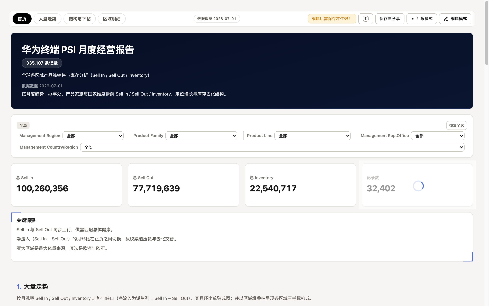
封面右下角与汇报页脚出现的「数据截至」日期，取自数据时间列的最大期，由构建自动生成；数据更新后会随之刷新。
2.3输入模板一：页面描述法（你说了算的版面）
适合「脑子里已经有版面」的情况：从上到下逐块说清每一块放什么。下面给出两种载体——直接打字描述，或者在拼版画板上亲手拖出来；两份模板都可以整段复制，把 <……> 换成自己的内容即可。
| 你的情况 | 用哪个 |
|---|---|
| 版面意图明确，打字能说清 | 纯文字版（下文 A）——一次对话直接出稿 |
| 想亲手拖块摆位、边拖边想 | 拼版画板版（下文 B）——先摆骨架，逐块转正 |
| 只知道业务问题，不知道怎么摆 | 改用 2.5 的场景描述法，让 AI 推荐版面 |
A · 纯文字版：逐块描述页面
把下面这段整段发给 AI（替换尖括号内容）：
把 <数据文件路径> 做成一份报告。
页面从上到下这样排：
1. 最上面放标题：「<标题名>」，副标题「<一句话说明 / 数据截至>」。
2. 标题下面放 <N> 个指标卡：<指标1>、<指标2>、<指标3>、<指标4>。
3. 第一块是「<块名>」：一张<销售随时间变化>的<折线图>（维度 <时间列>，指标 <数值列>，按<月>汇总）。
4. 第二块是「<块名>」：……（每块一句话：什么图 + 哪个维度 + 哪个指标 + 时间范围 / TOP-N / 排序；
两块想左右并排，就在句尾写「和第 X 块并排」）
5. 最后放一张<明细 / 聚合>表：……
全局要求：
- 筛选器：<列1>、<列2>
- 交付：<单文件 / 本机服务端>，标题「<报告标题>」
- 不要出现：<……>（如 散点图 / 明细表 / 封面）填好的示例：
把 data/销售明细_2026.xlsx 做成一份报告。
页面从上到下这样排：
1. 最上面放标题：「2026 年销售经营月报」，副标题写「数据截至 2026-09」。
2. 标题下面放 4 个指标卡：总销售额、订单数、客单价、达成率（达成率 = 销售额 ÷ 目标额）。
3. 第一块是「销售趋势」：一张销售额随月份变化的折线图，按月汇总。
4. 第二块是「区域排名」：一张各区域销售额对比的柱状图，只看 TOP 10，和第三块并排。
5. 第三块是「品类结构」：一张品类销售额占比的环形图。
6. 最后放一张聚合表：区域 × 品类的销售额交叉表，带合计行和数据条。
全局要求：
- 筛选器：区域、品类
- 交付：本机服务端打开，标题「2026 年销售经营月报」
- 不要出现：散点图逐块描述会被转成 12 列网格的显式坐标（整行 = 12 列、并排 = 6+6 或 8+4），钉过的版面之后永不被自动重排；「不要出现 + 版面取舍成体系」时走自由模式（声明即全部，不自动垫内容）。构建后先给草案，对着报告说「第 3 块换成堆叠柱」即可增量重出，不必整段重来。
B · 拼版画板版：先摆骨架，逐块转正
- 开画板：对 AI 说「
开一个拼版画板，数据用 <数据文件>」；服务已在跑时也可以从报告管理页点「＋ 新建拼版草稿」，或在任何报告编辑态顶栏点「＋ 新建拼版草稿」（以当前数据集为底）。 - 拖占位块：把 图表 / 指标卡 / 文本 / 表格 占位块拖到画布上，自由摆位、拉大小——这一步完全用手，不写一个字。
- 逐块交代（三选一，可混用）：① 在块的面板里直接绑字段；② 写一句话，如「
销售随月份的折线」「各区域 TOP10 柱状」；③ 留白——这块交给 AI 定。 - 交给 AI 转正：对 AI 说：
画板拼好了，按每个占位块里写的一句话生成正式图表，转成正式报告。
（也可以点名：「第 2、4 块留白的你看着定」）转正在原地址完成：占位块原地变成真实图表，报告 ID、链接都不变。草稿随服务持久化，拼到一半关掉下次继续；转正后的报告与普通报告无异（可编辑 / 分享 / 导出）。
2.4输入模板二：场景描述法（说数据 + 说问题）
适合「不知道版面、只知道要回答什么」的情况：列出数据是什么、问题有哪些，图表选型、版面编排全部交给 AI 按数据画像推荐。这条模板与产品内置的诉求单同构（对 AI 说「给我诉求单」可获得完整槽位并由 AI 代填）。
【我的数据】
- 数据文件：<路径>（多张表请都列出，并说明靠哪两列互相关联）
- 一行 = 什么：<表粒度一句话，如「一行 = 一个门店一个月的销售记录」>
【我要回答的问题】（1–5 条，每条一行）
1. <整体问题>？（可注明期望的图：折线 / 柱状 / …；不注 = 让 AI 推荐）
2. <分组问题>？（如 各区域销量 TOP 5 的产品是哪些）
3. ……
【可选 · 口径与偏好】（全部可空，空着 = 按数据自动推荐，每个自动决策都记录在
build/decisions.md、可回滚）
- 口径：<比率 = 分子 ÷ 分母 与单位>；对比方式：环比 / 同比 / 目标 / 无
- 对账锚点：<1–3 个合计真值，如 全年销售额合计 = ___>
- 交付：<单文件 / 本机服务端>；标题「<报告标题>」；主题色 / 页签偏好
- 不要出现：<……>填好的示例：
【我的数据】
- 数据文件：data/PSI_月度.csv
- 一行 = 什么：一个区域 × 一个品类 × 一个月的 PSI 记录，数值列有 Sell In、Sell Out、Inventory
【我要回答的问题】
1. 销售（Sell In）整体是什么趋势？→ 折线，按月
2. 各区域下销量 TOP 5 的产品是哪些？→ 每个区域内取 TOP 5
3. 库存结构健康吗？→ 库存量与月均 Sell Out 的对比，最好有比率
4. 哪些区域本月环比下滑最明显？
【可选】
- 口径：净流入 = Sell In − Sell Out；对比方式：核心指标带环比
- 对账锚点：全年 Sell In 合计 = 127,994
- 交付：本机服务端，标题「PSI 月度经营报告」，页签按「总览 / 趋势 / 结构」分组
- 不要出现：散点图每条问句变成一张卡：维度 × 指标 × 时间窗 → 图——问句动词决定图型（趋势 → 折线、排名 → 条形、构成 → 饼 / 环、转化 → 漏斗、关联 → 散点），版面由布局求解器自动编排。对账锚点在构建后自动抽查勾稽，实测值与锚点的比对结果记入决策清单，交付时可指给业务方。
3全流程实例：一张表到一份报告
第 2 章讲了「怎么提需求」；本章把镜头拉近，用一张 6 行的迷你表把从原始 CSV 到可交付报告的每一步拆开给你看：每个环节给出「你看到什么 / 系统做了什么 / 中间产物长什么样」，并且每个名词第一次出现就展开解释。读不懂某个词时，就近一定有它的定义框。
先认识三个角色——整条流水线里只有它们：
| 角色 | 负责什么 | 不负责什么 |
|---|---|---|
| 你 | 给数据文件；用日常语言说清主题、关注点、口径与底线（哪些数字必须对上） | 不需要懂 JSON、SQL、图表库，也不需要自己算数 |
| AI（模型） | 看懂数据与诉求，翻译成一份结构化的构建请求（3.4 节逐字段展开的那个 JSON），并对请求里每个口径负责 | 不手写 HTML/CSS、不排坐标、不写 SQL、不生成图表配色 |
| 确定性脚本 | 体检、画像、校验、编译、布局、聚合、渲染、勾稽、审计——把请求变成报告并自证正确 | 不擅自改数据、不替你做口径决定（请求说什么就是什么） |
流程总览：原始表 →（你说）→ AI 写请求 → 脚本校验 → 脚本编译 → 脚本审计 → 报告文件夹 → 你核对 → 迭代。下面逐步展开。
3.1原始数据：一张 6 行的 CSV
数据文件 门店销售月表.csv，全文如下（真实场景可能是 30 万行，行数不影响流程）：
月份,区域,门店,渠道,销售额,订单数
2026-01,华东,门店A,线上,1200,210
2026-01,华北,门店B,线下,900,180
2026-02,华东,门店A,线上,1500,260
2026-02,华北,门店B,线下,1100,200
2026-03,华东,门店A,线上,1350,240
2026-03,华北,门店B,线下,1250,190| 列 | 业务含义 | 它应该被当成 |
|---|---|---|
| 月份 | 自然月（YYYY-MM 文本） | 时间列——趋势图的横轴 |
| 区域 / 门店 / 渠道 | 三个分类维度 | 维度列——分组、筛选、拆分的依据 |
| 销售额 | 可加总的金额 | 指标列（金额语义，¥ 与万元口径） |
| 订单数 | 可加总的笔数 | 指标列（计数语义，整数） |
我们要做出的成品：4 张卡片（月度趋势、区域构成占比堆叠、门店对比、区域明细表）+ 1 个计算列（客单价）+ 1 个派生指标（销售额环比）+ 2 个对账锚点（合计必须等于 7,300 / 1,280）。这些名词看不懂没关系，3.4 节全部展开。
3.2第一步：给 AI 的话
你只需要把文件交给 AI，用日常语言说清四件事：主题（做什么报告）、关注点（看哪些维度和指标）、口径（数怎么算）、底线（哪些数字必须对上）：
这是 Q1 门店销售月表。帮我做一份经营报告：
按月看销售额趋势，加一列销售额环比；
区域构成用占比堆叠（每根柱 100%）；
门店做销售额对比；
客单价 = 销售额 / 订单数，它是均价，绝对不要加总；
区域明细给一张表。
另外全年销售额合计是 7300、订单总数 1280，构建时帮我核对。| 你说的话 | 会落到请求的哪个字段（3.4 展开） |
|---|---|
| 「按月看销售额趋势」 | charts 的趋势折线卡（时间维度 × 销售额） |
| 「加一列销售额环比」 | derived.measures 的窗口派生指标（3.4.5） |
| 「占比堆叠（每根柱 100%）」 | encoding.stackMode = "normalize"（3.4.7） |
| 「客单价 = 销售额 / 订单数，不要加总」 | derived.columns 计算列 + 价族名字自动拿到的价格语义（3.4.3 / 3.4.4） |
| 「区域明细给一张表」 | charts 的聚合表格卡（时间 × 区域交叉） |
| 「合计 7300 / 1280，帮我核对」 | anchors 对账锚点（3.4.6） |
上面是「说了算」的写法。也可以只说「按月看销售和区域构成」什么都不指定——AI 会按数据形态自动选图、自动补 KPI 与筛选；本例故意全都说死，是为了把每个环节展示给你看。两种写法产出同一份可编辑报告。
3.3第二步：数据体检与画像（脚本）
构建一开始，脚本先做两件不涉及 AI 的事：
① 数据体检（input-lint）：扫描常见数据病——合并表头、内嵌合计行（比如末尾一行「合计,4380,1280」会被识破并提示）、千分位文本（「1,200」存成文本）、参差行、空白行。体检只报告不拦截也不改数，让你知情。本例的日志：
[input-lint] 门店销售月表.csv: 6 列 × 6 行 — FAIL 0 / WARN 0② 数据画像（profile）：给每一列建立事实档案——推断存储类型、数一数有多少个不同值、缺了多少、数值列的范围，并给指标列一个语义提示（名字含「额/收入/成本」→ 金额类；名字含「率/占比」或值全在 0–1 → 百分比类；含「价/售价」→ 价格类）。画像结果（示意）：
| 列 | 推断类型 | 不同值 | 缺失 | 范围 | 语义提示 |
|---|---|---|---|---|---|
| 月份 | 时间 | 3 | 0% | 2026-01 ~ 2026-03 | — |
| 区域 / 门店 / 渠道 | 维度 | 2 / 2 / 2 | 0% | — | — |
| 销售额 | 指标 | 6 | 0% | 900 ~ 1,500 | 金额（金额类） |
| 订单数 | 指标 | 6 | 0% | 180 ~ 260 | 计数 |
不同值数（基数）＝这一列去掉重复后还剩几个值——它决定「这列适不适合当图表维度」（几百个不同值的门店编码画在轴上会挤成一团，系统会建议忽略或只取前 N 名）。缺失率＝空值占比。语义提示只是提示：它不写进任何产物，只有你在请求里显式声明的口径才算数（下一节）。
3.4第三步：构建请求逐字段展开
AI 把你的话翻译成一份 report_request.json（构建请求）——一份机器可校验的结构化说明。全文先给出来，然后逐块拆开讲；看不懂任何一行都正常，每块下面就是人话：
{
"schemaVersion": 1,
"templateId": "standard-bi-v1",
"title": "连锁门店 Q1 经营报告",
"columnRoles": {
"月份": "time", "区域": "dimension", "门店": "dimension",
"渠道": "dimension", "销售额": "measure", "订单数": "measure"
},
"measureTypes": {
"销售额": {"type": "currency"},
"订单数": {"type": "count"}
},
"datasets": [{
"id": "sales", "file": "门店销售月表.csv",
"derived": {
"columns": [
{ "name": "客单价", "op": "div", "left": "销售额", "right": "订单数" }
],
"measures": [
{ "name": "销售额环比", "kind": "window",
"input": {"agg": "sum", "col": "销售额"},
"fn": "prev", "grain": "month", "offset": 1,
"timeField": "月份", "output": "rate" }
]
}
}],
"anchors": [
{ "label": "全年销售额合计", "measure": "销售额", "aggregation": "sum", "value": 7300 },
{ "label": "订单总数", "measure": "订单数", "aggregation": "sum", "value": 1280 }
],
"charts": [
{ "presetId": "line.trend", "title": "销售额月度趋势",
"encoding": {"dimension": "月份", "measures": ["销售额"]} },
{ "presetId": "bar.stacked", "title": "区域构成",
"encoding": {"dimension": "月份", "measures": ["销售额"],
"breakdown": "区域", "stackMode": "normalize"} },
{ "presetId": "bar.rank", "title": "门店对比",
"encoding": {"dimension": "门店", "measures": ["销售额", "客单价"]} },
{ "presetId": "table.aggregate", "title": "区域月度明细",
"encoding": {"dimension": "月份", "measures": ["销售额", "订单数"],
"breakdown": "区域"} }
]
}注意：客单价没有出现在 columnRoles / measureTypes 里——它不是原始列，而是 3.4.4 定义的计算列，定义之后所有环节都把它当普通指标列对待。
3.4.1 头部三个字段
| 字段 | 本例取值 | 说明 |
|---|---|---|
| schemaVersion | 1 | 请求协议版本号，恒为 1（将来协议升级时用来识别旧格式） |
| templateId | standard-bi-v1 | 模板档位。standard-bi-v1 = 标准骨架：自动补齐 KPI 指标卡、筛选器候选、封面；free-v1 = 自由模式：声明什么就出什么，一个字不替你做主。缺省前者 |
| title | 连锁门店 Q1 经营报告 | 报告名（封面标题、文件夹与文件名、浏览器标签页） |
3.4.2 columnRoles：给每列发身份证
每个原始列归入五种角色之一，此后所有环节（取数、聚合、能不能拖进图表）都以角色为准：
| 角色 | 含义 | 本例 |
|---|---|---|
| time | 时间列：可按 年/季/月/周/日 分桶、保证日历序 | 月份 |
| dimension | 维度列：可分组、可筛选、可拆分序列 | 区域 / 门店 / 渠道 |
| measure | 指标列：可聚合的数值 | 销售额 / 订单数 |
| id | 实体键（订单号/编码）：唯一但无分组意义，不会出现在任何图表候选里 | （本例没有） |
| ignore | 明确不要的列：完全不参与构建 | （本例没有） |
没写 columnRoles 的列由画像自动推断（3.3 的类型列就是推断结果）；显式写了以你为准。误标的代价是真实的：把金额标成 dimension，它就再也进不了 KPI 和图表的指标区。
3.4.3 measureTypes：给指标定数值语义
角色只回答「是不是数值」，measureTypes 回答「是什么意义的数值」——它决定显示格式、大数压缩、以及可不可以加总：
| type | 格式 | 加总 | 缺省聚合 | 典型列 |
|---|---|---|---|---|
| currency | ¥ + 万元口径（≥1 万显示「x.xx 万」） | 可以 | 求和 | 销售额、成本、利润 |
| price | 与货币同格式（含币种） | 不可以 | 平均 | 单价、售价、均价、客单价 |
| percent | %（自动识别存值是 0–1 还是 0–100） | 不可以 | 平均 | 转化率、毛利率、占比 |
| count | 整数 + 千分位 | 可以 | 求和 | 订单数、人数、件数 |
| duration | 「x.x 天」 | 可以 | 求和 | 时长、耗时 |
| number / unitless | 普通数值 | 可以 | 求和 | 评分、无单位量 |
本例只显式声明两列；其余靠名字与画像兜底。对象写法还可加 divisor（显示口径，如 10000 = 显示时除以 1 万挂「万」，原始数据不动）、decimals（小数位）、semantic（更细的语义注解，如评分 Score 让轴自动钉 0–100、排名 Rank 让轴反转，见 7.2）。「不要加总」是怎么强制的：价格/百分比类指标在任何求和场景——图表聚合、堆叠、合计行——都会被脚本拒绝（3.5 有真实报错样式），不靠自觉。
3.4.4 derived.columns：计算列（行级）
"columns": [
{ "name": "客单价", "op": "div", "left": "销售额", "right": "订单数" }
]计算列 = 每一行各自算一遍，算完物化成真实存在的数值列。「物化」的意思：编译时脚本真把 6 个结果算出来存进数据集，之后取数、聚合、筛选都当它是原始列，没有运行时逐次重算的开销。四个白名单算子：add 加 / sub 减 / mul 乘 / div 除；left / right 可以是列名或常数。本例物化后：
| 月份 | 门店 | 销售额 | 订单数 | 客单价 = 销售额 ÷ 订单数 |
|---|---|---|---|---|
| 2026-01 | 门店A | 1,200 | 210 | 5.71 |
| 2026-01 | 门店B | 900 | 180 | 5.00 |
| 2026-02 | 门店A | 1,500 | 260 | 5.77 |
| 2026-02 | 门店B | 1,100 | 200 | 5.50 |
| 2026-03 | 门店A | 1,350 | 240 | 5.63 |
| 2026-03 | 门店B | 1,250 | 190 | 6.58 |
「客单价」这个名字命中价族（单价/售价/均价/客单价…），自动获得价格语义：显示带 ¥、不可加总、缺省按平均聚合——3.4.7 的门店对比图里它就按「平均」参与。这正是你那句「它是均价，绝对不要加总」的落点。
3.4.5 derived.measures：派生指标（聚合级）
{ "name": "销售额环比", "kind": "window",
"input": {"agg": "sum", "col": "销售额"},
"fn": "prev", "grain": "month", "offset": 1,
"timeField": "月份", "output": "rate" }计算列是「每行算」，派生指标是「聚合之后再算」——所以它能表达「环比」这种行级永远算不出的口径。逐键解释：
| 键 | 本例取值 | 含义 |
|---|---|---|
| kind | window | 时间窗口类派生。另有 formula（聚合后公式，如毛利率 = SUM(毛利额)/SUM(收入)）、filtered（条件聚合：只统计满足筛选条件的行）、share（占比：占总计/占父级） |
| input | sum(销售额) | 窗口「看」的基础指标——先按月加总销售额，再对月度值取窗口 |
| fn / offset | prev / 1 | 窗口算子：prev=取上一期（offset=往回几期）；cum=累计；ytd=年累计；rank 族=组内排名 |
| grain / timeField | month / 月份 | 按什么粒度、拿哪列当时间轴——「上月」必须先定义「月」 |
| output | rate | 输出形态：rate=（本期−上期）/上期 的百分比；delta=差值；value=上期原值 |
本例求值过程（聚合在前、窗口在后）：
| 月份 | 月销售额（先算） | 上期 | 销售额环比 =（本期−上期）/上期 |
|---|---|---|---|
| 2026-01 | 2,100 | — | 空缺（首期没有前期，绝不显示 0 冒充） |
| 2026-02 | 2,600 | 2,100 | +23.8% |
| 2026-03 | 2,600 | 2,600 | 0.0% |
引用窗口指标的图表，其时间维度必须正是 timeField 指的列、且分桶粒度与 grain 一致——不一致时图表上该指标置灰不可拖并说明原因，绝不静默算出一个跨粒度的假环比。环比列在第二个月才有值是正确行为，不是数据缺失。
3.4.6 anchors：对账锚点
"anchors": [
{ "label": "全年销售额合计", "measure": "销售额", "aggregation": "sum", "value": 7300 },
{ "label": "订单总数", "measure": "订单数", "aggregation": "sum", "value": 1280 }
]锚点是你声明的必须对上的真值（通常来自 ERP 或上级已核实的报表）。逐键：label = 人话名（报错时用它指认）；measure = 对哪列；aggregation = 什么口径（sum / average / count / min / max 五种）；value = 声明的真值；dataset =（多数据集时）对哪张表，缺省主表；tolerance = 容差，缺省相对 1e-6（金额级精确）。编译时脚本在物化完计算列之后的真实数据上重算同一口径并逐条比对——本例：销售额 sum = 1,200+900+1,500+1,100+1,350+1,250 = 7,300 ✓；订单数 sum = 210+180+260+200+240+190 = 1,280 ✓。对不上时构建直接失败并给出实算与声明两个数（3.5）。这等于每次构建自动做了一遍人工勾稽。
3.4.7 charts：四张卡怎么声明
presetId 从九种图表词汇里选（白名单之外的值直接被校验拒绝）：
line.trend 趋势折线 area.trend 面积 bar.rank 柱状对比 bar.stacked 堆叠柱 pie.share 饼图 donut.share 环形 funnel.stage 漏斗 scatter.correlation 散点 table.aggregate 聚合表格
encoding 是每张卡的数据绑定：dimension 横轴/分组维度；measures 指标数组；breakdown 交叉列（把第二个维度拆成一簇序列，本例「区域构成」用区域拆分销售额）；stackMode 堆叠方式（sum = 绝对值落叠；normalize = 每根柱归一到 100%，只看构成不看绝对量，TOP-K 与排序仍按原始值）。占比堆叠的显示效果：
| 月份 | 华东 | 华北 | 柱上效果（normalize） |
|---|---|---|---|
| 2026-01 | 1,200（57.1%） | 900（42.9%） | 一根 100% 的柱：华东 57.1% + 华北 42.9% |
| 2026-02 | 1,500（57.7%） | 1,100（42.3%） | 同上，比例随月变化 |
| 2026-03 | 1,350（51.9%） | 1,250（48.1%） | 华东华北接近对半 |
请求里还能写更多（都有白名单校验）：图表级 topK（如门店对比取前 10）、table 表格设置（排序/合计/条件格式/列宽模式）、layout 显式坐标（12 列网格，钉住的版面永不被自动重排）、filters 报告级筛选、kpis 显式 KPI（不写则自动补）。词汇全集见 references/authoring-feature-map.md。
3.5第四步：校验——请求过三道闸
请求提交给编译器前后会撞上三道闸，全部是拒绝式设计（报错并停止，绝不「猜个意思」继续跑）：
- 请求层校验：字段名拼写、取值白名单（角色五种 / type 七种 / presetId 九种 / 锚点聚合五种）、引用完整性（图表引用的数据集、派生指标引用的列必须存在）。拼错的字段名得到「不支持的字段」报错，而不是被悄悄忽略。
- 编译期语义闸：对真实表再验一遍——不可加指标被声明成 sum → 拒绝；派生指标引用未知列 → 拒绝（报错列出可用列）。
- 锚点勾稽：3.4.6 的比对，不符 → 拒绝。
三条真实报错样式（数据为示意）：派生指标「销售额环比」引用了未知列 '销售鵝'；可用列：['月份','区域',…]（错别字当场暴露）；指标「客单价」是价格类（强度型），sum 无业务意义——建议 average；对账锚点「全年销售额合计」不符：销售额 sum 实算 7,300，声明 7,900（差 -600）。数据与口径不一致，拒绝编译——请核对锚点数值或数据文件。每条都以「下一步怎么办」收尾，AI 拿到后会自行修正并重试。
3.6第五步：编译——请求变成报告
校验通过后，编译器按固定顺序做六件事（每件的输出就是下一件的输入）：
- 物化计算列：把 3.4.4 的客单价算成 6 个真值存进数据集。
- 解析指标语义：给每个参与聚合的指标定下格式与缺省聚合（价格→平均，金额→求和），并烘进产物——编辑器里看到的聚合方式就是编译期定下的，所见即所得。
- 布局求解：把卡片放进 12 列网格。每类卡有高度公式（图表按「卡片装饰高度 + 绘图最小高度 + 注释行数」计算，表格按行容量计算），同排卡片对齐到最高者。本例 6 张卡的落位（示意，实际由数据形态决定）：
┌─ KPI ──┬─ KPI ──┬─ KPI ──┬─ KPI ──┐ ← 自动补的指标卡条（3+3+3+3 列）
├───── 销售额月度趋势（12 列整行）─────┤ ← 时间序列独占整行
├── 区域构成（8 列）──┬─ 序列图例（4 列）─┤ ← 堆叠柱 ≥3 序列配 8+4
├─ 门店对比（6 列）─┬─ 区域明细表（6 列）─┤ ← 6+6 并排，对齐到最高- 静态图表生成：每张卡按聚合结果直接算好 ECharts 配置写进页面——首屏打开不需要等任何 JavaScript 聚合，双击即见成品。
- 自动填充：KPI 指标卡、筛选器候选、封面「数据截至」徽章按数据形态自动补齐（standard-bi-v1 档）。
- 打包：产出报告文件夹（3.8），并写构建清单（build/manifest.json：每张卡的绑定、口径、布局契约）。
ECharts 是页面里画图的图表库（随报告离线内嵌，不联网加载）。「静态配置写进页面」与「编辑后实时重算」共用同一套聚合逻辑——所以编辑模式改聚合/筛选后看到的数，与首屏静态数一定一致（这套一致性有专门测试钉着）。
3.7第六步：审计——自证「真的画出来了」
编译完不等于交付：构建会用真实浏览器打开报告跑一轮审计，因为「页面里有图表代码」不等于「像素真的画出来了」（历史上发生过整卡渲染失败而其它检查全绿的事故，就是靠这一轮堵住的）。审计项包括：每张图表真实绘制（等到画布出现像素才算过）、编辑器控件可用、数据真值抽查（页面数字与数据重算一致）、无坏格式化器（防止 NaN / undefined 上屏）、卡片无溢出。审计不过 = 构建失败，AI 必须修复后重试；你看到的每一份「ready」报告都跑过这一轮。
3.8产物与交付
连锁门店 Q1 经营报告/
├── 连锁门店 Q1 经营报告.html ← 单文件模式：报告本体，双击离线打开
└── build/
├── manifest.json ← 产物契约：每张卡的绑定/口径/布局
├── decisions.md ← 决策清单：AI 的每个口径选择与理由
├── data-quality.md ← 体检与画像结论
└── … ← 数据快照、列统计等三种交付形态怎么选（构建时按数据量自动定，也可显式指定）：
| 形态 | 什么时候 | 打开方式 |
|---|---|---|
| singlefile | 数据 ≤ 10 万行 | 双击 HTML 即可，完全离线 |
| server | 大数据量（≤ 500 万行）或多表关联 | 双击「打开报告」启动器（起本地服务）或访问报告 URL |
| mixed | 小表内联 + 大表走服务端的混合 | 同 server |
这两种形态下，<报告名>.html 是一张指引入口页（写着访问地址与管理页入口），不是报告本体——别把它当附件发给别人，否则对方打开会「图表加载不出来」。正确的交付物是报告 URL 或整个文件夹（含启动器三件套）。
3.9第七步：阅读核对
打开报告后，按这条顺序花两分钟核对（都是数字层面的眼见为实）：
- KPI 条：总销售额应显示 ¥7,300（= 1,200+900+1,500+1,100+1,350+1,250，锚点已替你勾稽过）；总订单数 1,280。
- 趋势图：三个月 2,100 → 2,600 → 2,600；环比副线自第二个月起 +23.8% → 0.0%，首期空缺。
- 区域构成：每根柱 100%，华东占比逐月 57.1% → 57.7% → 51.9%。
- 门店对比：销售额按月加总排序；客单价按平均显示（约 ¥5.0 ~ ¥6.6 区间），聚合下拉里没有「求和」选项。
- 明细表：月份 × 区域交叉，行合计 = 对应两门店之和，表尾合计 = 7,300 / 1,280。
3.10第八步：迭代
两种改法随便混用：回到对话继续说（「环比再加一条订单数线」「门店只看华东」→ AI 改请求增量重建，布局与已确认的口径保持稳定）；或进编辑模式自己动手（第 5 章）：拖字段、换图型、调聚合、加计算字段——改动实时落进报告，读者打开就是改好的样子。语义闸在编辑器里同样生效：价格/占比类指标的聚合下拉里根本没有「求和」选项，想错都错不了。
整条流水线里，你的判断力只花在两处：3.2 把话说清楚（口径与底线），3.9 花两分钟核对。中间的翻译、校验、编译、勾稽、审计全部是确定性的——同一份数据加同一份请求，永远得到同一份报告。
2.5口径对账锚点
如果你手里已经有必须对上的合计真值（比如「全年销售额合计 = 7,300」「订单总数 = 1,280」来自 ERP 或上级报表），在提需求时直接告诉 AI，它会把这些数字写成构建请求里的 anchors 对账锚点。构建时脚本会在物化完计算列之后的真实数据上重算同一个口径，并与你声明的值逐条比对：
- 对上了：构建日志逐条打印
[anchor] 全年销售额合计: 销售额 sum = 7,300 ✓，正常交付。 - 对不上：构建直接失败，报错给出实算 / 声明两个数和差值——数据文件与口径说法打架时，让构建停下来，绝不交付一份对不上的报告。锚点声明的容差缺省是相对 1e-6（金额精确勾稽），也可以放宽（如
tolerance: 0.5）。逐字段展开见 3.4.6。
月度例行报告换数据重建时，把上期已核实的合计值留作锚点，相当于给每次重建上一道免费的勾稽保险：数据文件悄悄换错、口径悄悄漂移，构建当场就拦下，而不是等读者发现问题。锚点也支持引用计算列（如「净销售额合计」），最多 8 条，覆盖 count / sum / average / min / max 五种口径。
4阅读报告（读者视角）
4.1筛选器
报告顶部的筛选条是交互式控件而非静态说明：改变任一筛选条件，全部图表、KPI、表格会立即重新聚合。控件形态按字段角色自动匹配：
| 字段角色 | 控件形态 | 说明 |
|---|---|---|
| 维度 | 值域下拉，可勾选「多选」 | 高基数列只列出声明过的候选值 |
| 时间 | 日期范围（起 – 止） | 任一端留空为开口区间；2026/9/5、20260905、2026年9月5日 等写法都能正确比较 |
| 数值指标 | min – max 区间 | 如「只看销售额 ≥ 100 万」 |
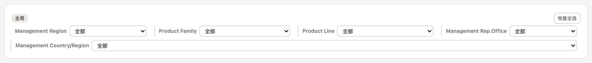
筛选器以「卡片」形式存在，每张卡片有作用范围：
- 全局 作用于全报告所有卡片；
- 页签 只作用于所在页签的内容（多页签报告里每个页签可以有相对独立的筛选）。
若在数据源配置中建立了维度层级（如 区域 ▸ 办事处 ▸ 国家），筛选器会自动按层级级联：子级选项随上级选中值收窄，失效选择自动清理。
数据卡上的筛选条（筛选 ▾）
除报告级筛选卡外，每张数据卡的卡头还有一个「筛选 ▾」按钮，展开常驻筛选条——它是一组固定在卡片上的值域勾选列表：
- 作者（编辑态）负责勾选哪些维度值得常驻（如给区域表卡挂上「品类」）；
- 读者（阅读态）点开任一维度就是一枚值域按钮：搜索、全选 / 清空、勾选即重聚合（
2026-062026-07这样的多选一并生效）；单选显示所选值，多选显示「已选 N 项」； - 常驻条只影响本卡，与报告级筛选卡叠加计算；
- 值域联动：如果作者对这张卡配置过数据范围限制（见 5.3），常驻条的选项会随限制收窄——读者永远选不出注定为空的值。
筛选在此收敛为两层：读者筛选（报告级筛选卡 + 卡头常驻条，读者可改）与作者配置（编辑态列头漏斗 / 维度范围，对整卡固化、读者不可见）。早年在表格工具条上的筛选按钮已并入这两层。
4.2KPI 指标卡
KPI 是数据绑定的一等公民：它的数值由聚合引擎实时计算，跟随筛选联动，永远不会与图表矛盾。KPI 卡可开启对比（引用一个「窗口派生指标」，如月环比），数值下方出现同比/环比副行，涨跌着色。
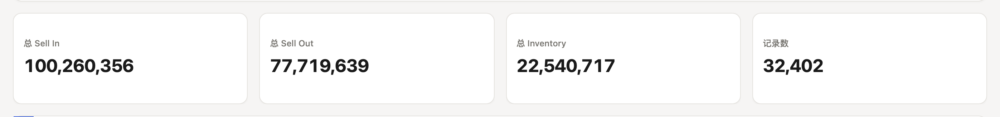
4.3图表交互
TOP-N 即时切换
排名类柱状图支持在 5 / 10 / 20 / 50 / 全部 之间即时切换，重算在毫秒级完成。被截断时卡片右下角会如实标注口径：
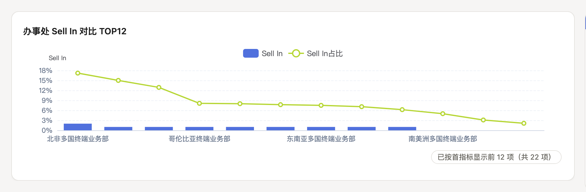
趋势与多序列
时间维度自动按日历序排列、按日 / 周 / 月 / 年正确分桶。多指标趋势图支持下「柱 + 线」混排；派生序列（如 净流入 = Sell In − Sell Out）与基础序列同轴呈现：
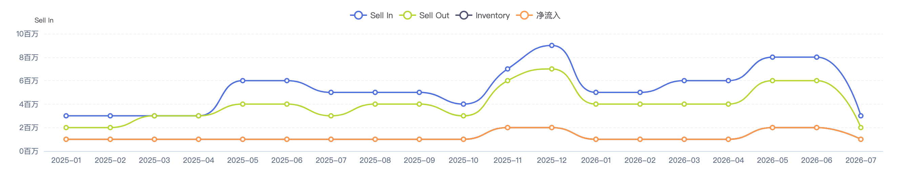
时间层级下钻
点击时间轴上的一根柱子 / 一个点 = 只看该桶并自动换更细一级（年 → 季 → 月 → 日），卡片顶部出现 全部 › 2025 › 返回上级 面包屑。粒度不会比源数据更细——月精度的数据不会提供「日」这一级，绝不给会算错的入口。
表格行跳转明细
勾选了明细视图的聚合表格，鼠标悬停任意一行会出现「点击行看明细」提示，点击即跳转到预置了对应筛选条件的明细数据，并可一键返回聚合视图。
5编辑报告（作者视角）
5.1进入编辑模式
点击顶栏右侧「编辑模式」进入编辑态。顶栏随即多出一组编辑工具：数据源配置、页面宽度、报告主题、插入卡片；每张卡片悬停时出现操作条（拖拽手柄、编辑、筛选、删除等）。所有改动即时生效，但需要「保存并覆盖」之后读者才能看到——阅读态顶栏常驻这句话提醒。
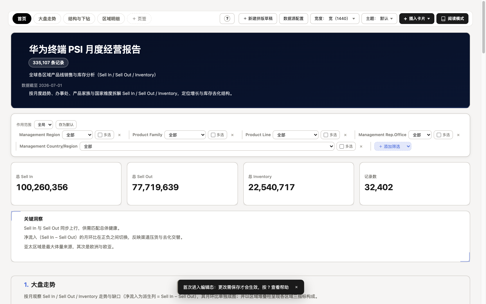
「插入卡片」菜单提供四种卡片：图表 文本 表格 筛选器。新插入的图表卡默认半宽（12 栅格中的 6 列、高 6 行），插入后立即打开设置面板开始配置。
5.2图表设置面板
点击任意图表卡卡头的「编辑」按钮，右侧打开图表设置面板。面板自上而下分三段：图表类型 → 数据设置 → 显示设置。
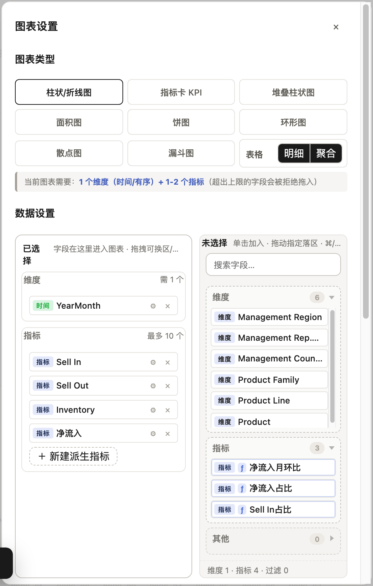
图表类型
九种图表类型 + 指标卡，点击即切换，维度 / 指标的合法性约束会即时提示（不合法的字段拒绝拖入）：
柱状/折线图 堆叠柱状图 面积图 饼图 环形图 散点图 漏斗图 表格（明细 / 聚合） 指标卡 KPI
「柱状/折线图」是一张合并的类型卡：每个指标芯片上有「形态」按钮（柱形 / 线形），全柱形 = 柱状图、全线形 = 折线图、混排 = 柱线组合图。「指标卡 KPI」也在同一张类型网格里——图表卡可以一键转成指标卡，反之亦然。
数据设置：已选择 / 未选择 双栏
- 已选择区按「维度 / 指标」分区（表格卡为「行 / 列 / 值」三区，见第 6 章）；字段芯片可拖拽换区、换顺序，芯片上的 ⚙ 打开该芯片的全部设置（聚合方式、小数位、Y 轴、单位等），× 移除。
- 未选择区是字段库，按 时间 / 维度 / 指标 / 其他 分组；支持搜索、单击加入、拖拽指定落区。id / 忽略类字段只展示不可拖入，需先在「数据源配置」改角色。
- 面板底部实时显示统计：维度 N · 指标 N · 过滤 N。
显示设置
排序（字段 + 方向，或时间序 / 自定义）、TOP-K 与「合并其余为其他」、目标值进度条、参考线、图例、图表标题（直接点击卡片标题就地改）等。每个指标的小数位与 Y 轴（左 / 右）在指标芯片上单独设置。堆叠柱状图另有「堆叠方式」开关：绝对值堆叠（各段按原始值落叠）/占比堆叠（每根柱归一到 100%，看构成占比；TOP-K 与排序仍按原始值计算）。
几类「看了就懂」的渲染是自动的：柱状图上利润 / 环比这类有正有负的指标，负值段自动染对比红色（正负双色，盈亏一眼分清）；「评分」类指标值轴固定 0–100（68 分不会把轴顶撑到 70）；「排名」类值轴自动反转（第 1 名在顶部）。这些跟随字段配置里的语义注解（见 7.2），不需要逐卡设置。
5.3卡片操作
| 操作 | 方式 |
|---|---|
| 移动卡片 | 按住卡片顶部拖拽手柄拖动；或聚焦手柄后用方向键微移（Shift 加速） |
| 调整大小 | 拖拽卡片边缘 / 右下角；文本卡右下角还有 1px 级精调手柄 |
| 卡片设置 | 卡头「编辑」按钮打开右侧设置面板 |
| 读者筛选条 | 卡头「筛选 ▾」：编辑态勾选让哪些维度常驻卡头；读者在阅读态多选值域、勾选即重聚合（只影响本卡，见 4.1） |
| 数据范围限制 | 编辑态列头「漏斗」配置对整卡生效的筛选与维度范围（只看华东、近 6 月）——读者不可查看与修改，且会收窄读者筛选条的选项值域 |
| 手动高度 | 拖过高度后卡为「手动高度」，点「适应内容」恢复自动贴合 |
| 删除 / 撤销 | 卡头「删除」；误删后底部出现「已删除 X · 撤销」（一层，Cmd/Ctrl+Z 等价） |
5.4文本卡与批注
文本卡全部内联编辑：点击文字直接改，格式条提供 段落级别（H1/H2/H3/正文）、加粗、斜体、删除线、列表、引用、代码、链接。每张文本卡可选五种形态：标题 / 段落 / 批注 / 引用 / 分隔线，以及「卡片样式」（透明 / 白底 / 8 种色板）。章节叙述带支持 Markdown 子集（构建期声明）。
5.5报告主题
顶栏「主题 ▾」一键切换整报告视觉：图表配色、字体、封面渐变、KPI 强调色、表头、筛选胶囊、合计行全部一起换肤。悬停菜单项即整报告实时预览，移开自动回滚。
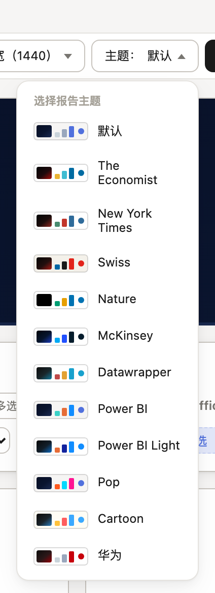
| 主题 | 风格 | 备注 |
|---|---|---|
| 默认 | Notion 式中性皮肤，蓝紫主色 | 报告缺省 |
| The Economist / New York Times / Swiss / Nature / McKinsey / Datawrapper | 六大经典编辑 / 咨询风格 | 取自权威图表风格的墨色与色板 |
| Power BI / Power BI Light | 商业智能风 | Power BI 为深底档，仅图表换肤、报告壳保持默认 |
| Pop / Cartoon | 高饱和活泼风 | 同为深底档（Pop） |
| 华为 | 品牌红主色 | 按品牌令牌定制的整报告皮肤 |
5.6页面宽度
顶栏「宽度 ▾」提供 标准 1280 / 宽 1440 / 更宽 1600 / 全屏 1920 四档，切换后所有卡片、图表、表格立即重排，选择随报告保存。
5.7保存与分享
顶栏「保存与分享」打开分享中心，集中承载保存、分享与导出：
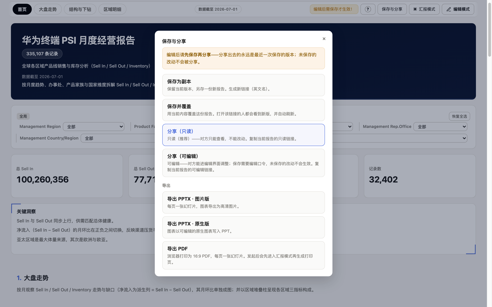
| 能力 | 说明 |
|---|---|
| 保存为副本 | 保留当前版本，另存一份新报告，生成新链接 |
| 保存并覆盖 | 用当前内容覆盖这份报告；打开该链接的人都会看到新版并自动刷新 |
| 分享（只读）推荐 | 对方只能查看，不能改动；复制当前报告的只读链接 |
| 分享（可编辑） | 对方可进入编辑界面调整；保存需要编辑口令 |
| 导出 PPTX · 图片版 | 每页一张幻灯片，图表导出为高清图片，文本卡为可编辑文本框 |
| 导出 PPTX · 原生版 | 文本、表格和柱 / 线 / 饼图以可编辑原生元素写入 PPT；不支持原生映射的图表自动降级为图片 |
| 导出 PDF | 浏览器打印为 16:9 PDF，每页一张幻灯片；发起后会先自动进入汇报模式 |
分享出去的永远是最近一次保存的版本；未保存的改动不会被分享。server 模式的分享链接依赖本机服务保持运行，关机后对方无法访问。
6数据表卡与交叉表
表格卡是本产品能力最深的一类卡片：既是普通的明细查数工具，也是一张专业的交叉表（透视表）。本章按配置面板的顺序展开。
6.1概述与典型用法
表格卡有「明细」与「聚合」两个子视图（类型网格里「表格」的两个选项）。聚合视图即交叉分析的主场：行维度 × 列维度交叉，值区放指标，表头自动两级 / 三级展开，合计与小计按全量口径统计。
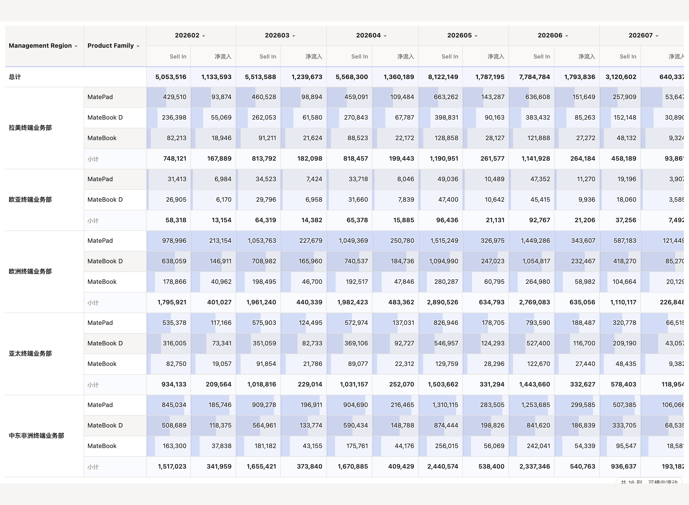
6.2数据配置：行 / 列 / 值 三区
表格视图（及热力 / 堆叠等交叉视图）的设置面板采用「行 / 列 / 值」三区布局，字段库在右，拖拽或单击即可配置：
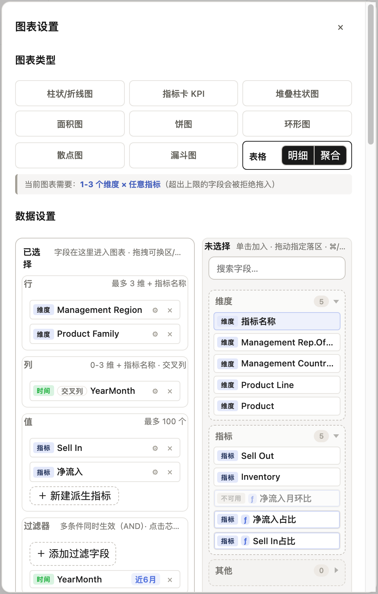
| 区域 | 容量 | 说明 |
|---|---|---|
| 行 | 最多 3 维 ＋ 指标名称 | 第 1 维为大组，后续维度嵌套在内；「指标名称」是常驻字段库的虚拟维度（见 6.10） |
| 列 | 0–3 维 ＋ 指标名称 合计最多 4 层；指标名称可挂任意位置 | 拖入即透视——列区落列后自动变为交叉矩阵，无需手动选布局；「指标名称」挂载位即表头层级位（见 6.10） |
| 值 | 最多 100 个指标 | 每个指标可单独设置聚合方式、小数位、格式、数据条目标值 |
| 过滤器 | 多条同时生效（AND） | 卡级数据范围限制；时间字段支持「近 6 月 / 近 4 周」等相对范围 |
行 / 列 / 值的组合决定了表格形态，路由规则如下：
| 行维数 | 列维数 | 渲染形态 |
|---|---|---|
| 1 | 0 | 平铺分组表（每行一条维度取值 + 指标列） |
| 2–3 | 0 | 嵌套平铺：第 1 维合并组头，段尾可加小计（图 6-5） |
| 1 | 1 | 交叉矩阵：行 × 列两级表头 |
| 2–3 | 1–3 | 多层交叉矩阵：行嵌套 × 列嵌套，表头最多三级（图 6-4）；加上「指标名称」作为一层最多四层，指标名出现在它挂载的那一层 |
| >3 或下钻超限 | 任意 | 自动泄压为 ND 长表（每行一条完整维度路径），保证永不丢数 |
6.3表头与合并（中国式表格）
- 合并同类单元格：默认开启。对当前行集「相邻同值」合并（rowspan），排序 / 筛选 / 翻页后随新行集重算，永远一致。
- 两级 / 三级表头：列区多列维或「列 × 指标」组合时自动生成嵌套段组表头；单指标也可选择「表头显示指标名」。
- 指标名称作表头层：把「指标名称」拖入列区后，指标名成为表头的一个真实层级（帆软式转置，见 6.10）。
- 表头竖线均可拖：任意表头竖线（含段组格右缘）都是列宽手柄，拖哪条调哪一列。
6.4合计与小计
| 能力 | 说明 |
|---|---|
| 合计行 | 显示 / 隐藏可切换，位置可选顶部或底部；按全量过滤后的原始行重算，而非页面可见值二次聚合——翻页 / 截断不改变口径 |
| 合计口径 | 每列可指定 求和 / 平均 / 最大 / 最小 / 去重计数 等（如「合计应为平均」） |
| 行总计列 | 行尾横向加总列，开关可配 |
| 段尾小计 | 嵌套 / 多层矩阵中按第 1 维分组输出小计行，小计标签可自定义 |
| 派生指标口径 | 比率类派生指标（占比 / 环比）在合计行显示「—」——比率不可加，宁可空缺也不给错数 |
6.5排序与取数
- 表头点击排序：任意表头升 / 降序，多级排序可在面板配置。
- 矩阵列序管道：列维顺序 = 自定义排序列表 ＞ 时间日历序 ＞ 行序首现，行序与列序解耦。
- 组内 TopN：按第 1 维分组取组内前 N（如「每个区域只看 Sell In 前 5 的品类」），名次按首指标降序，合计口径与显示行集一致。
- 显示截断：表格可只显示前 N 行；截断是显示层行为，合计仍按全量统计。
- 维度取值范围：每个维度芯片可配「范围」——时间维度支持近 N 期（周 / 月 / 季 / 年）或起止期（锚点默认数据最大期）；类目维度支持值域多选。
- 分页：嵌套 / 矩阵表按第 1 维组为单位分页，组永不跨页（不会出现组合被拦腰截断、合并格错位）；每页条数可调。
6.6单元格样式
| 能力 | 说明 |
|---|---|
| 数据条 | 默认开启：相对列最大值的内嵌条形，一眼比大小（图 6-1 / 5-3 可见） |
| 目标进度条 | 为指标声明目标值后，数据条变为「实际 vs 目标」进度语义 |
| 条件格式 | 阈值规则高亮：达标标红 / 异常高亮等，规则即时生效 |
| 占比列 | 一键为指标追加占比列（走「占总计」派生指标口径，筛选后分母正确重算） |
| 副指标 / 迷你图 | 指标旁可挂同比 / 环比副列；行尾可加趋势迷你图（点名开启） |
| 空值展示 | 空值统一显示「—」，可为空值配置专属别名 |
6.7列宽
表格设置中「列宽」提供两种模式：
- 自适应内容（默认）：按表头与当前页内容计算最小列宽，表更宽时撑满卡片、更窄时出横向滚动条，并出现「可横向滚动」提示；
- 等分填充：列宽均分并拉伸撑满。
拖拽任意表头竖线即进入自定义：被拖列精确到像素、其余列不跟随变形；双击列缘恢复按内容自适应。自定义几何在两种模式下都优先生效。矩阵表头支持冻结首列（序号 / 维度列 sticky）。
6.8明细视图
明细视图是一张可搜索的原始数据表：关键字搜索（不分大小写）、表头排序、分页、字段显隐自选（「字段」按钮）、以及导出 Excel（带合并与列宽）。聚合视图勾选「点击行看明细」后，聚合行可一键跳入预筛选的明细：
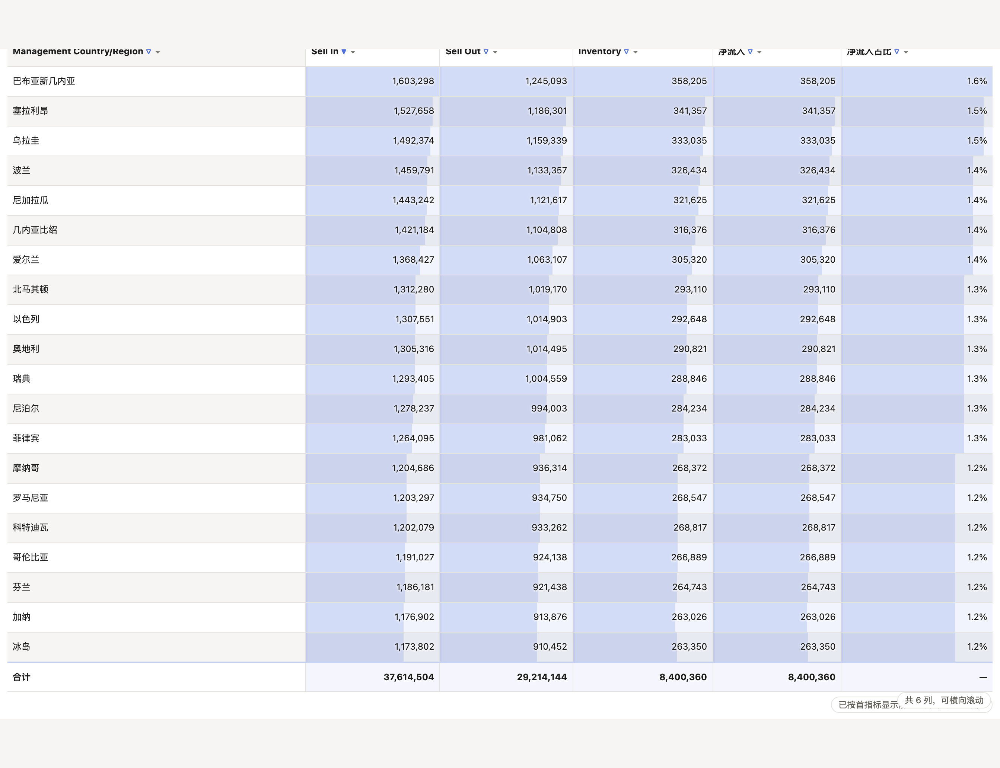
6.9层级下钻
在数据源配置中把维度字段拖成父子层级（如 区域 ▸ 办事处 ▸ 国家）后：
- 表格卡最深行维的单元格出现 ▸ 展开标记，点击 = 追加下钻一级，整表重渲；
- 表顶出现面包屑，可逐级回退；
- 图表卡点击柱 / 饼切片同样按层级下钻，多分支层级会弹出「下钻到」选择目标层级。
6.10指标名称维度（转置）
字段库常驻一枚特殊虚拟维度「指标名称」：把它拖入行区或列区任意位置，值区指标就会被「转置」——每个指标成为一行（或一列表头），实现「指标当年月展开」「指标当区域展开」等帆软式布局。要点：
- 值区为空时不出现；每次往值区加指标，会自动把它挂到列区末尾（也可手动移走）；
- 指标名称不占行列区的 3 维容量，且可挂任意位置：行区最多 3 个真实维度 ＋ 指标名称，列区同样最多 3 真实维 ＋ 指标名称（合计 4 层表头）——挂载在哪一位，指标名就出现在表头哪一层（如 列区「品类 × 指标名称 × 月份」= 品类段组下先分指标、再按月份展开）；
- 每个指标保留自己的格式与小数位（per-measure 格式缝），数据条也按同指标行内比较；
- 行区挂载时跨指标合计无业务意义，合计行 / 行总计列会自动关闭；
- 未挂载且只有一个指标时，表头不再出现重复的「指标值」空层。
6.11三层行列与四层表头
行、列各支持最多 3 层维度（＋指标名称，合计 4 层表头），列多层以嵌套段组表头展开，服务端单次 GROUP BY 直接支撑：
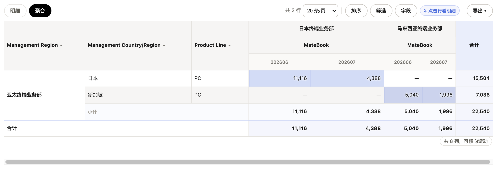
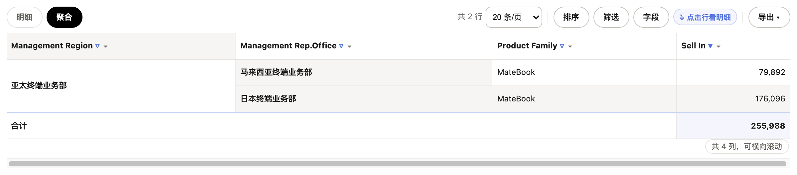
6.12配置项速查
| 配置项 | 取值 | 缺省 |
|---|---|---|
| 布局 | 交叉矩阵 / 分组行 / 嵌套平铺 / 明细长表 | 列区有列 = 交叉矩阵；无列 = 分组行 |
| 合并同类单元格 | 开 / 关 | 开 |
| 数据条 | 开 / 关（目标值可选） | 开 |
| 合计行 | 开 / 关 × 顶部 / 底部 | 关（点名开启） |
| 行总计列 / 段尾小计 | 开 / 关 | 关 |
| 组内 TopN | 0 / 空 = 关，正整数 = 组内前 N | 关 |
| 列宽模式 | 自适应内容 / 等分填充 | 自适应内容 |
| 每页条数 | 10 / 20 / 50 / 100… | 20 条/页 |
| 点击行看明细 | 开 / 关（需勾选明细视图） | 开 |
| 维度范围 | 近 N 期（周 / 月 / 季 / 年）/ 起止期（时间）；值域多选（类目） | 不限 |
7数据源管理
7.1数据源配置界面
编辑态顶栏「数据源配置」进入全屏三段式界面：左侧数据表列表（可搜索，显示行数 / 列数 / 被几张图表引用，server 模式下还有「服务端数据表」物理表清单），右侧默认是字段配置，可切换画布模式查看表间关系图。
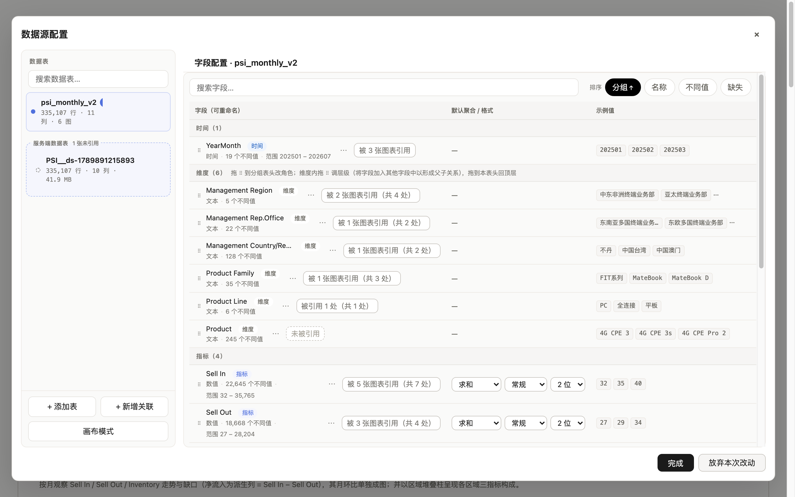
7.2字段配置
每个字段一行，行内自带数据事实副行（类型 · 不同值数 · 缺失率 · 范围），可展开字段全部设置：
| 配置 | 说明 |
|---|---|
| 角色 | 时间 / 维度 / 指标 / 忽略 四选一；与系统推断不同时行内提示「系统默认：X」 |
| 重命名（别名） | 只改显示名，取数仍用原名——改名不会让任何图表失效；显示名不允许重复；改名弹窗会告知影响面（几张图表 / 指标卡 / 派生定义） |
| 默认聚合 / 格式 | 数据集级默认值：新建图表、新拖入的指标自动套用（求和 / 平均 / 计数 / 去重计数…；常规 / 百分比 / 货币 / 价格 / 整数 / 时长，小数位 0–6），图表内可再单独覆盖。价格档与货币同格式（含币种与万元口径），但缺省聚合是平均、不可加总 |
| 语义注解 | Flint 语义标签下拉（金额 / 收入 / 成本 / 价格 / 占比 / 评分 / 排名 / 温度 / 情感…；自动 = 按字段名推断，如「转化率」→占比）。声明后按该语义执行：价格 / 占比类不可加总、不可堆叠求和（构建期显式求和直接报错）、缺省聚合改平均；评分列图表轴自动钉 0–100、排名列轴自动反转。用于纠正「按名字猜错」或表达名字看不出的语义 |
| 货币符号 | 货币类指标的芯片 ⚙ 里有「货币符号」开关（默认显示）；关闭后 图表 / 表格 / KPI 三处同步隐藏 ¥ 前缀，数值口径不受影响。币种在列级声明（23 种内置 + 自定义符号），KPI 卡不单独覆盖币种 |
| 字段说明 | ≤ 120 字，写「这列是什么 / 怎么算的」，随字段提示展示 |
| 值别名 | 维度取值的显示层改名（如「华东区」→「华东」）；谓词与下钻仍用原值，不会打出空结果 |
| 隐藏字段 | 不进「新增」候选，但仍参与取数与既有引用；从字段行 ⋯ 菜单可取消隐藏 |
| 引用反查 | 每行有「被 N 张图表引用」徽标，点开列出全部引用点，点击滚动定位到那张卡片——「改这个字段会影响什么」一眼可见 |
| 维度层级 | 维度行拖 ⠿ 到另一字段 = 建立父子层级（拖到分组表头 = 回到顶层）；层级驱动筛选级联与下钻 |
时间粒度不在这层配置——哪个图表要多粗的粒度，就在那个图表的时间维度芯片上选（原始 / 年 / 季 / 月 / 周 / 日）。数据值本身就是周编号的列（如 W35、2026-W35、2026年35周、35周）也能直接当时间列用：统一识别为周粒度，排序、分桶、筛选、近 N 期全链路一致，轴上显示归一为 W05 / 2026-W05 形态；裸数字周号（只有「35」）不带年份、无法保证跨年排序，建议列里带上年份信息。
顶部排序控件支持按 分组（角色分组 + 维度树）/ 名称 / 不同值 / 缺失 四种视图；所有改动实时生效，底部「完成」提交、「放弃本次改动」回滚到打开时的快照，删除类操作支持一层撤销。
7.3计算字段：计算列与派生指标
「＋ 新建 ▾」打开统一的计算字段弹窗（行级 / 聚合级两个页签 × 公式 / 时间窗口 / 占比 / 筛选聚合四种形态），带预设栏、可搜索字段库、实时校验和前 5 行 / 期真实数据预览。定义只在这一处发生，图表与表格面板只读引用：
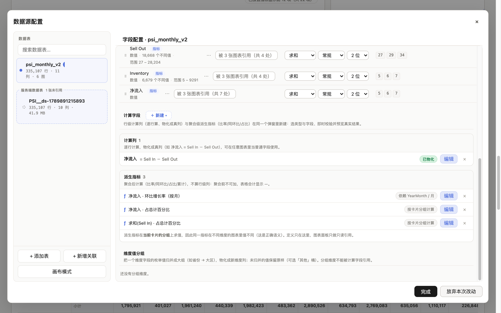
| 类型 | 求值时机 | 典型用途 |
|---|---|---|
| 计算列（行级） ≤ 8 列 | 逐行计算，物化成真实列 | 客单价 = 销售额 / 订单数；净流入 = Sell In − Sell Out；日期差 |
| 派生指标（聚合级） 四类合计 ≤ 16 个 | 公式：聚合之后按公式求值 | 毛利率 = SUM(毛利额) / SUM(收入)；公式函数含 COUNTD（去重计数） |
| 时间窗口：聚合后按时间键取前期 / 累计 | 月环比 / 同比 / 累计（须声明时间列与粒度，引用它的图表维度必须一致） | |
| 占比：聚合后除以总计 / 父级组内和 | 占总计（与合计行同口径）、占父级 | |
| 筛选聚合（条件聚合）：聚合时只统计满足条件的行 | 有货国家的 Sell In；达标门店的销售额；只统计「线上渠道」的订单数——分组不变，组内只累加通过条件的行 |
派生指标是「不可加」指标：它在每张卡片当前的分组上求值，同一指标在不同维度的图表里值不同——这是正确语义。因此在表格合计行里比率类派生显示「—」。依赖不满足的窗口口径（图表维度 / 分桶与声明不一致）会置灰并给出原因，绝不静默算错：宁可空缺，也不给错周期。四类派生指标都可以带语义注解（弹窗里的「语义」下拉，如毛利率显式声明「占比」）——格式与可加性按声明走，不再依赖名字里恰好带「率」字。
指标芯片右键 / ⚙ 里的「显示为占比」是快捷方式：自动创建（或复用）一个「占总计」派生指标并交换该芯片，再点还原。KPI 卡的「对比」同样是引用一个窗口派生指标。
7.4维度值分组
把一个维度字段的枚举值归并成大组（如 省 → 大区、200+ 国家 → 区域），物化成一个新的真实维度列，之后处处当普通维度使用。分组构建器从值域勾选成员（可搜索 / 全选），未归并的值保留原样或落入「其他」桶；域外新增历史值靠手打区跨期保留。
7.5多数据源与表间关联
- 一份报告最多挂 8 张数据表，每张表独立成数据源；图表 / KPI / 筛选器各自声明归属，卡片按实际归属表显示数据源徽标。
- 表间关联：声明两表保留 + 关联键（≤ 16 条关系），可链式合并出一张宽表数据集；合并键自动派生「对齐维度」，驱动跨表筛选级联与跨表同图聚合。宽表可解散、可重新合并；关系地图在「画布模式」可视化维护。
- 数据源独立模式：声明「各数据源完全独立、禁止合并」，与表间关联互斥（同时声明会被校验拦截）。
- 构建期也支持传路径数组（如
W35.csv + W36.csv）做同构并集，一行声明补多期数据。
7.6更新数据
数据源配置侧栏的每张表都有「替换数据」入口，弹窗提供三种模式（两步确认，第二步会对比新旧行数与时间值集）：
| 模式 | 语义 | 适合 |
|---|---|---|
| 全量替换 | 新文件整体换掉当前表（列结构不同走列映射向导） | 重刷整表 |
| 增量合并（upsert） | 按主键并入：有则覆盖、无则插入；幂等（重复导入结果一致） | 往期追溯修正 |
| 追加新行 | 不查重不覆盖，全部行并入表尾（免选主键） | 同构文件补新一期数据（如月度新一批） |
- 上次使用的模式会被记住并标「上次使用」；「维度 + 时间列」按钮一键设主键预设。
- 大文件（> 4 MB，server 模式）直传后台任务：右下角常驻任务条展示上传百分比 → 服务端阶段 → 终态；终态必须手动关闭，成功带新增行数勾稽、失败带可行动文案且数据零改动。xlsx 大文件解析约每 10 万行 10–40 秒属正常。
数据「没更新」时，先看两处：任务条终态文案与数据源配置里的行数。不要用手工合并 / 转换源文件的方式绕过导入——那是数据事故的常见起点。
7.7服务端数据表与行级管理
- 服务端数据表块（侧栏底部，server 模式）：列出本报告全部物理表，历史 / 未引用表带徽标 + 行数 / 占用，可逐表真删除（引擎表 + 快照 + 记账一起清）；被其他报告副本共享的表只脱离、不删除。
- 管理数据弹窗：筛选构建器 + 勾选行 + 「删除选中行 / 删除筛选命中行」，server 模式真删数据库行并保留单份备份供人工回滚；删除全部行的筛选需显式确认。
8汇报模式与导出
8.116:9 分页预览
顶栏「汇报模式」把所有卡片装入行对齐的 16:9 分页：每页顶部预留标题带，卡片只能落在内容区，某一行放不下就整体顺延到下一页（永不劈卡）。分页布局与单页正文相互独立——在汇报模式里的拖拽 / 插入只影响放映版式，退出后单页布局原样还原；「从单页重置」可重新自动分页。
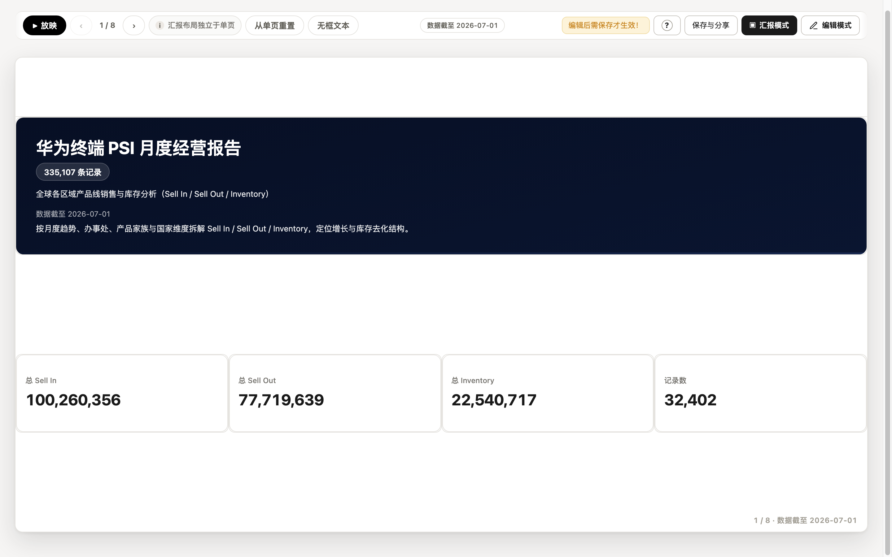
8.2放映
左上角「放映」进入浏览器全屏：当前页按视口等比铺满，方向键 / 空格 / 点击翻页。图表以静态图方式上屏，保证任何机器上都流畅。
8.3导出
导出入口在「保存与分享」中心（见 5.7）：PPTX 图片版（版式最稳）、PPTX 原生版（文本 / 表格 / 柱线饼可再编辑）、PDF（浏览器打印，每页一张幻灯片）。导出复用汇报模式的分页器，屏幕预览与导出分页完全一致。
9交付与运维
9.1统一服务与报告管理页
每台电脑只跑一个报告数据服务（默认从 8765 端口起），所有报告集中注册。任意报告服务的报告管理页（http://127.0.0.1:8765/manager）一处可见本机所有报告：
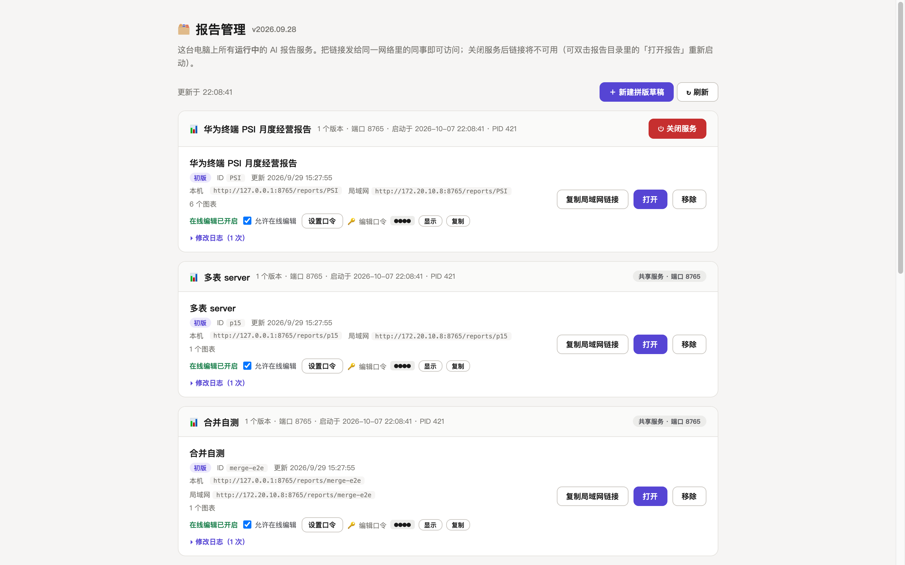
- 管理页仅限本机打开（非本机访问一律拒绝）；报告页面里没有任何进入它的按钮——把构建日志 / 入口页里的
/manager链接告诉报告主人即可。 - 每条报告可开关「允许在线编辑」并「设置口令」；关闭后任何保存都会提示联系管理员（分享链接不受影响）。
- server 模式构建时若未设置编辑口令，会自动生成一个并打印在构建日志 / 入口页 / build README 中。
9.2局域网分享
数据服务默认绑定所有网卡，「分享（只读 / 可编辑）」会给出局域网链接——同一 WiFi / 网段内的同事、手机直接打开即可（首次可能需要允许防火墙入站）。服务所在电脑关机后链接不可用，可双击报告文件夹里的「打开报告」启动器重新拉起。
9.3便携启动器：报告文件夹可搬家
server / mixed 报告的文件夹是自足可移植的：整体拷贝（或压缩发送）到另一台电脑，双击 打开报告.command / .cmd 即可用——零第三方依赖；目标机器没有合适 Python 时启动器自动下载便携版（校验官方 SHA256），数据快照随文件夹走并自动注册进对方机器的服务。环境变量 LRM_PORT / LRM_STATE_HOME / LRM_NO_OPEN 可定制端口 / 数据目录 / 不自动开浏览器。
9.4安全边界
- 服务 API 只提供健康检查、注册 / 注销、schema、受限聚合与分页明细，不暴露任意 SQL，无公网鉴权——请只在可信内网使用。
- server 报告的 manifest 不含原始行数据；图表切换全部经受限聚合接口完成。
- 报告为纯静态渲染：无外部脚本 / 字体 / 图片，运行资产全部内联，不允许函数字符串 formatter。
9.5Agent 升级路线：从互动报表到 Report Agent
Live Report 的下一步不是让模型直接改 HTML，而是让 Agent 读懂报告口径、调用受控工具、给出可核验证据，再在得到确认后执行改变报告的动作。报告仍由确定性构建器保证数据真实；Agent 负责把「我想知道什么」翻译成结构化分析，把结果和依据带回给人。
图 9-2 Agent 只在服务端调用受控工具。模型输出是计划和参数，不是 SQL、HTML 或权限。
9.5.1先把报告讲清楚，Agent 才能做对事
Agent 读取的是报告的语义上下文：当前卡片、所属页签、数据集、维度与指标、每个指标的聚合方式、时间分桶、筛选器、TOP-N 截断和数据版本。比如「销售额」和「客单价」都可能是数字，但前者可加、后者不可直接求和；「同比」还必须绑定时间列和粒度。上下文由服务端重新校验，用户切换卡片或刷新数据后，旧回答不会串到新卡片。
这套口径延续报告已有的语义引擎：字段先分为时间、维度、指标等语义类型，再根据通道决定排序、轴域、颜色和堆叠；类别过多时按成员聚合后做 TOP-N，并明确告诉读者发生了截断。这样 Agent 的解释和报告上的数是同一套数。
9.5.2一次分析如何完成
| 你说的话 | Agent 做的事 | 你看到的结果 |
|---|---|---|
| “解释这张库存趋势图” | 定位当前卡片，读取库存指标、月份粒度与筛选，调用趋势分析工具 | 结论 + 真实聚合行 + 数据截至 + 缺失期 / 截断提示 |
| “比较华东和华南的 Sell In” | 校验两个区域值，按同一时间口径取数并计算贡献度 | 对比表、差异、覆盖范围和口径说明 |
| “帮我找出异常门店” | 在服务端做有界异常扫描，超过扫描预算时明确返回原因 | 异常候选、观测证据、下一步可选分析，不宣称因果 |
| “把这张图改成月环比” | 检查时间列 / 分桶是否满足派生指标依赖，生成图表 proposal | 修改前后 diff；点击「确认应用」才写入当前会话 |
长耗时任务会进入任务条：模型调用、复杂聚合、证据导出和数据替换都返回 jobId，页面按服务端建议轮询。你可以停止等待；服务端会取消查询、关闭可取消的 provider 连接并清理任务记录。安全的只读任务支持带 token 重试，未知副作用不会自动重放。
9.5.3哪些动作需要确认
| 动作 | 默认行为 | 确认与权限 |
|---|---|---|
| 问答、解释、对比、下钻、画像 | 可自动执行只读工具 | 返回 evidence、provenance、假设与限制 |
| 修改图表字段 / 类型 / 筛选 | 先生成 proposal | 展示 before / after、影响卡片和数据集范围；确认后应用 |
| 保存报告、更新数据、导出证据 | 进入受控 Job | 按编辑口令、数据集范围和审批要求执行；失败可诊断 |
| 创建监控、发送通知 | 默认只读 / 不发送 | 通知需显式启用、审批和幂等 delivery；未配置 connector 时 fail-closed |
报告文件、原始数据、Server、Agent 状态和密钥管理留在本机。远程 Provider（如 DeepSeek）只会收到经过裁剪和脱敏的上下文与 evidence；需要数据完全不出机时，配置本机 Ollama / llama.cpp 等 OpenAI-compatible 端点。API Key 只由服务端读取，不写入 manifest、HTML、日志或发布包。
9.5.4分阶段升级：每一步都可验收
| 阶段 | 用户感受到的变化 | 产品底座 |
|---|---|---|
| 现在：Copilot | 选中一张卡提问，得到按当前口径计算的答案和证据；可预览受限改图 | ReportContext、真实聚合、派生指标统一求值、卡片会话隔离 |
| 升级：Report Agent | 一句话触发多步分析，查看计划、工具、每一步证据和预算；只读计划可连续执行 | typed AgentPlan、Tool Registry、依赖拓扑、Job / 取消 / 重试 / 审计 |
| 持续：Monitor / Watch | 保存异常、期间比较和数据质量监控；变化时生成通知提议 | 持久 monitor、证据指纹去重、审批与可选 webhook；邮件 / Slack 连接器按部署启用 |
| 产品化边界 | 多用户、跨主机队列、企业身份和长期趋势由部署平台接入 | 当前本机版本保持 fail-closed，外部基础设施未配置时返回可行动错误 |
完整的状态、目标和验收入口见Agent/server 总推进方案；Copilot 的接口与安全约束见Server-mode Report Copilot 说明。这两份文档是工程细节，产品使用时只需要记住：先选卡，再提问；先看证据，再确认改动。
10附录
A图表类型白名单
| 类型 | 适用场景 | 维度要求 |
|---|---|---|
| 柱状 / 折线图 | 排名对比；趋势随时间变化；多指标柱线组合 | 1 个维度（时间 / 有序）+ 1–2 个指标（多指标时自动柱线混排） |
| 堆叠柱状图 | 构成与「A × B」交叉计数 | 维度 + 交叉列；主类目少、序列多时自动改折线防拥挤 |
| 面积图 | 带体感的趋势 | 时间或有序维度 |
| 饼图 / 环形图 | 整体占比 | 切片 ≤ 8 |
| 散点图 | 两个指标的关联 | 两条值轴，远离 0 时自动数据拟合（不强制 0 锚定） |
| 漏斗图 | 阶段流转 | ≥ 3 个有序阶段 |
| 表格（聚合） | 交叉分析 / 证据表 | 见第 6 章 |
| 表格（明细） | 原始记录查数（搜索 / 排序 / 分页） | 自选字段 |
| 指标卡 KPI | 单一关键数字 + 对比副行 | 一个指标 + 可选窗口派生对比 |
热力图、仪表盘、地图、雷达、桑基等暂不在白名单内。
B筛选操作符
报告 / 卡片级筛选支持的谓词（最多 10 条，AND + 一层 OR 组合）：
eq ne gt gte lt lte contains in not in is null is not null，数值区间 between、日期范围 daterange（三端语义一致，日期在规范化 ISO 上比较）。
C常见问题（FAQ）
C1 打开 <标题>.html 后图表「加载不出来」？
server / mixed 模式的该文件是指引入口页，不是报告本体。请双击「打开报告」启动器，或访问入口页上的报告 URL；也不要把这个文件当附件发给别人。
C2 数据更新后报告里没变化？
先看两处：右下角任务条终态文案（是否成功、新增多少行）与数据源配置里的行数。另外记得：编辑过的报告要「保存并覆盖」读者才能看到新版。
C3 时间轴乱序或有空白期？
确认时间列的角色是「时间」。产品内置统一的时间解析器，2026/9/5、20260905、2026年9月5日、epoch 时间戳等写法都能正确按日历序排列与分桶；多种写法混在一列也没问题。
C4 列区拖入字段后表格还是普通平表？
「列区落列即透视」是缺省行为；若报告此前显式把布局固定成了「分组行」，到表格设置 → 布局里改回「交叉矩阵」即可。
C5 派生指标芯片显示「不可用」？
窗口类派生指标（环比 / 同比 / 累计）要求图表维度正是它声明的时间列、且分桶粒度一致。芯片置灰即当前卡片不满足依赖，按提示调整维度或分桶。
C6 为什么不建议在 Excel 里预先算好占比 / 环比再导入？
Excel 算死的值无法跟随筛选与维度变化，筛选后必然与图表矛盾。正确做法：行级加工留在 Excel（每行自己决定的值），占比 / 同环比 / 排名 / 合计这类随查询变化的值交给报告的派生体系（6.3 节）。
C7 大 xlsx 导入慢？
走直传 + 后台任务，任务条会显示已耗时；xlsx 解析约每 10 万行 10–40 秒属正常，请等终态再判断成败。
C8 局域网同事打不开链接？
确认服务所在电脑开机且服务在跑（管理页可查）；首次访问需允许 macOS / Windows 防火墙入站；链接是 http://<局域网IP>:端口/reports/<id>，不要发成 127.0.0.1。
C9 筛选后图表显示「没有数据」？
卡片会如实显示原因与生效筛选数，并提供一键「清除筛选」。若筛选值与数据写法不一致（如「华南」vs「华南大区」），用值别名统一显示层写法。
C10 想要地图 / 热力图？
暂不支持（图表白名单见附录 A）。交叉矩阵 + 数据条 / 条件格式可以覆盖大部分「看分布」的诉求。
C11 时间列的值是「W35」「35周」这样的周编号，能当时间用吗？
能。W35、2026-W35、2026年35周、35周 等写法统一识别为周粒度时间：轴上按日历周序排列、显示归一为 2026-W35 形态，「近 N 期」范围也支持按周裁剪。注意裸数字周号（只有「35」）不带年份、无法保证跨年排序，建议列里带上年份。
C12 表格工具条上的「筛选」按钮去哪了？
筛选入口收敛为两层：读者的筛选走卡头「筛选 ▾」常驻条（多选值域、勾选即重算，见 4.1）与报告级筛选卡；作者要对整卡固化的数据范围在编辑态用列头漏斗配置，读者不可见、不可改。
D词汇表
| 词汇 | 含义 |
|---|---|
| 数据集 / 数据表 | 报告挂载的一张二维表；一份报告最多 8 张 |
| 卡片 / 区块 | 报告画布上的一个元素：图表、表格、KPI、文本、筛选器等 |
| 维度 / 指标 | 维度 = 分析视角（文本 / 类别列）；指标 = 被聚合的数值列 |
| 交叉列 | 放在表格「列区」的维度，展开为透视表头 |
| 计算列（行级） | 逐行计算并物化成真实列的派生字段（四则 / 日期差） |
| 派生指标（聚合级） | 聚合后求值的指标：公式 / 时间窗口（环比同比累计）/ 占比 / 筛选聚合（条件聚合），带 ƒ 徽标 |
| 筛选聚合 | 派生指标的一种：聚合时只统计满足条件的行（如「有货国家的 Sell In」），分组不变、组内只累加通过条件的行 |
| 周字段 | 值形如 W35 / 2026-W35 / 35周 的时间列，按周粒度参与排序 / 分桶 / 筛选 / 近 N 期 |
| 卡头筛选条 | 卡头「筛选 ▾」展开的常驻筛选：作者挑常驻维度，读者多选值域、勾选即重聚合（只影响本卡） |
| 指标名称 | 常驻字段库的虚拟维度，拖入行 / 列区可把指标转置为行 / 表头层 |
| 作用范围 | 筛选器卡片的作用域：全局 / 页签 |
| 汇报布局 | 汇报模式独立的 16:9 分页版式，与单页正文互不影响 |
| 编辑口令 | 在线保存需要的口令，构建时自动生成，管理页可改 / 可关闭在线编辑 |
| 数据截至 | 数据时间列的最大期，封面 / 页脚徽章自动展示 |
| 报告管理页 | /manager：本机集中管理所有报告与服务的页面（仅本机可开） |
| 状态目录 | ~/.ai-html-report/：注册表、数据快照与服务进程信息的机器级目录 |
本手册配图全部截取自真实运行中的报告（华为终端 PSI 月度经营报告、多维表格三层行列验收报告），页面内容与产品 v2026.10.19 实际行为一致。Agent 章节依据本仓库的 Agent/server 总推进方案与 Server-mode Report Copilot 说明维护。产品中文名以正式定名为准。